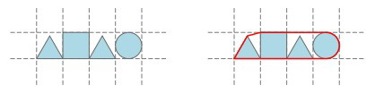

一些几何图形整齐地在一个网格图上从左往右排成一列。它们占据了连续的一段横行
每个位置恰好一个几何图形。每个图形是以下的三种之一：
1.一个恰好充满单个格子的正方形。
2.一个内切于单个格子的圆。
3.一个底边与格子重合的等边三角形。

已知每个格子的边长都为1，请求出这些几何图形的凸包的周长。
| F.A.Qs | Home | Discuss | ProblemSet | Status | Ranklist | Contest | 入门OJ | ModifyUser Xeonacid | Logout | 捐赠本站 |
|---|